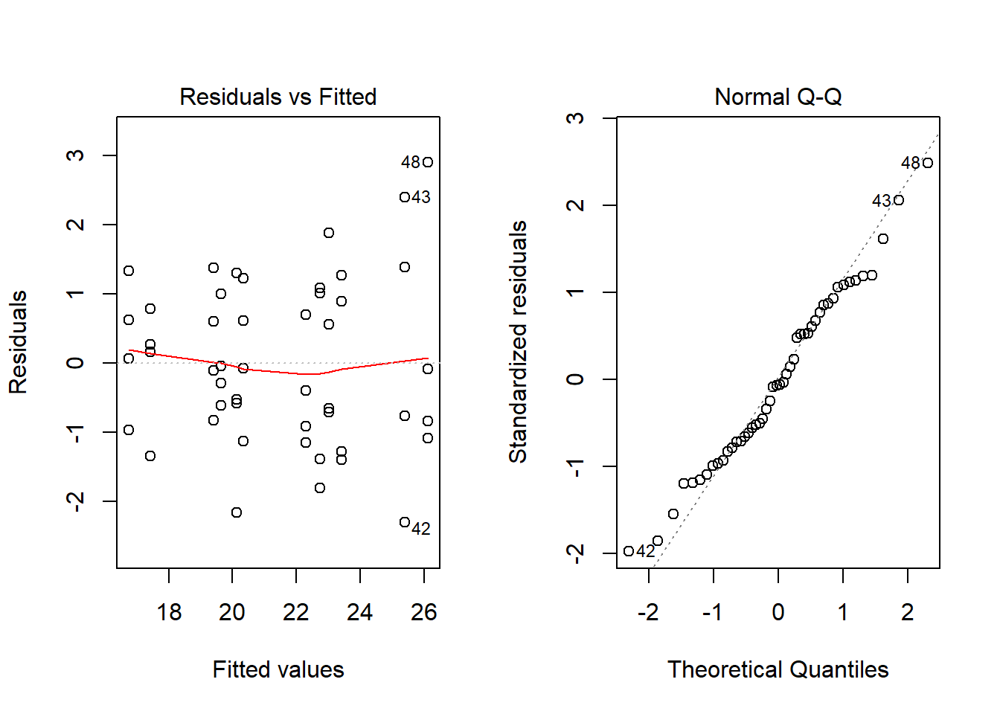
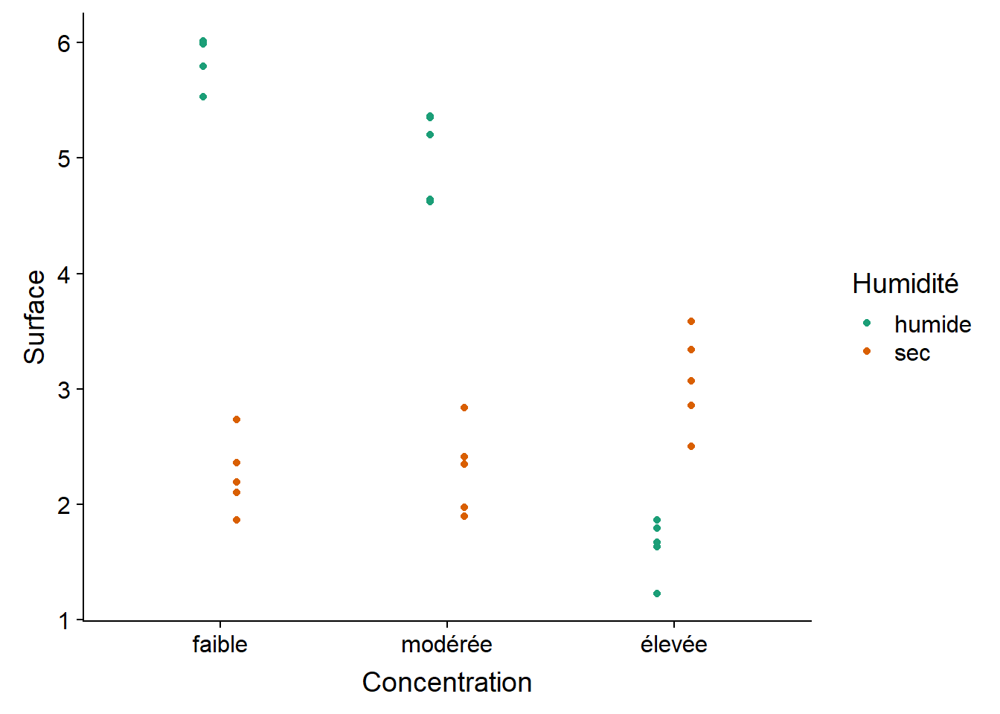
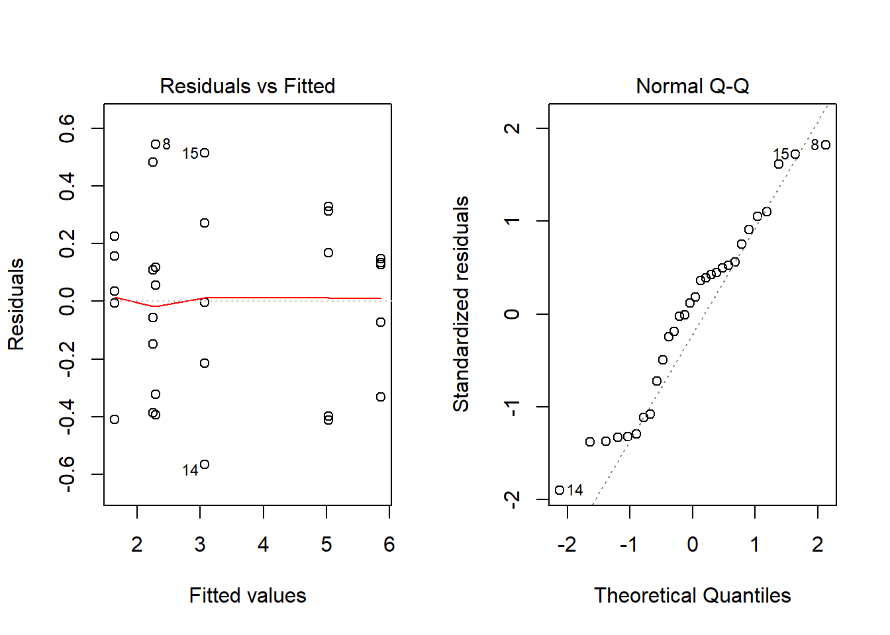

Two-way ANOVA and randomized complete blocks
September 30, 2019
Objectives
In the last class, we saw examples of one-way ANOVA. In this course, we will use ANOVA to estimate the additive effect of two factors (two categorical variables) as well as their interaction. We will also study the analysis of experimental plans in blocks (randomized complete blocks).
Finally, we will reformulate the ANOVA model as a linear regression model and we will consider different coding options for categorical variables (factors).
Reminder: One-way ANOVA
In the one-way ANOVA model, the response \(y_{ik}\) of the individual \(k\) in group \(i\) is the sum of three effects: the grand mean of the population (\(\mu\)), the difference between the mean of the group \(i\) and the grand mean (\(\alpha_i\)) and the residual (\(\epsilon_{ik}\)) or “error” which is the part of the response not explained by the model.
\[ y_{ik} = \mu + \alpha_i + \epsilon_{ik} \] The model also assumes that the residuals are independent and all follow the same normal distribution.
\[ \epsilon_{ik} \sim N(0, \sigma) \]
Two-way ANOVA without interaction
To illustrate two-way ANOVA, we will first use the growth.csv dataset from the textbook Statistics: An Introduction Using R. The experiment compares the weight gain of 48 animals following three types of diet with four types of supplements. There are 12 groups (all combinations of the 3 diets and 4 supplements) of 4 individuals each.
growth <- read.csv("../donnees/growth.csv")
str(growth)## 'data.frame': 48 obs. of 3 variables:
## $ supplement: Factor w/ 4 levels "agrimore","control",..: 3 3 3 3 2 2 2 2 4 4 ...
## $ diet : Factor w/ 3 levels "barley","oats",..: 3 3 3 3 3 3 3 3 3 3 ...
## $ gain : num 17.4 16.8 18.1 15.8 17.7 ...ggplot(growth, aes(x = supplement, y = gain, color = diet)) +
# position_dodge puts horizontal space between points of different colors
geom_point(position = position_dodge(width = 0.3)) +
scale_color_brewer(palette = "Dark2")
We can represent this experiment with the following model, where \(y_{ijk}\) is the weight gain for individual \(k\) having diet \(i\) and supplement \(j\):
\[ y_{ijk} = \mu + \alpha_i + \beta_j + \epsilon_{ijk} \]
In this equation, \(\mu\) is the grand mean, \(\alpha_i\) represents the effect of treatment \(i\) in the first factor (factor A) and \(\beta_j\) represents the effect of treatment \(j\) in the second factor (factor B).
Note that this model is additive. In our example, the combined effect of a diet and a supplement is the sum of the two effects taken separately. We will see later how to model non-additive effects.
The different coefficients of the model are estimated as follows (the hat indicates it is an estimate):
- Grand mean: \(\hat{\mu} = \bar{y}\).
- Effect of treatment \(i\) of factor A: \(\hat{\alpha_i} = \bar{y_i} - \bar{y}\) (difference between the mean of individuals receiving the treatment and the grand mean).
- Effect of treatment \(j\) for factor B: \(\hat{\beta_j} = \bar{y_j} - \bar{y}\).
The residuals are equal to \(y_{ijk} - \bar{y} - (\bar{y_i} - \bar{y}) - (\bar{y_j} - \bar{y})\), or by simplifying: \(y_{ijk} - \bar{y_i} - \bar{y_j} + \bar{y}\).
Two-way ANOVA table (no interaction)
Here is the ANOVA table corresponding to this model if we have \(l\) treatments for factor A, \(m\) treatments for factor B and \(n\) replicates for each combination of treatments (thus \(lmn\) total observations).
| Component | Sum of squares (SS) | Degrees of freedom (df) | Mean square (MS) |
|---|---|---|---|
| Factor A | \(SSA = \sum_{i = 1}^l mn (\bar{y_i} - \bar{y})^2\) | \(l - 1\) | \(MSA = \frac{SSA}{l - 1}\) |
| Factor B | \(SSB = \sum_{j = 1}^m ln (\bar{y_j} - \bar{y})^2\) | \(m - 1\) | \(MSB = \frac{SSB}{m - 1}\) |
| Residual | \(SSE = \sum_{i = 1}^l \sum_{j = 1}^m \sum_{k = i}^n (y_{ijk} - \bar{y_i} - \bar{y_j} + \bar{y})^2\) | \(lmn - l - m + 1\) | \(MSE = \frac{SSE}{lmn - l - m + 1}\) |
| Total | \(SST = \sum_{i = 1}^l \sum_{j = 1}^m \sum_{k = i}^n (y_{ijk} - \bar{y})^2\) | \(lmn - 1\) |
The number of degrees of freedom for mean square residual (MSE) is always the total number of observations, minus 1 degree of freedom per estimated mean (1 for the grand mean, \(l - 1\) for the effects of factor A and \(m - 1\) for the effects of factor B).
In one-way ANOVA, the ratio \(MSA / MSE\) was compared to the \(F\) distribution to determine if factor A had a significant effect. Here, two independent \(F\) tests are conducted based on \(MSA / MSE\) and \(MSB / MSE\), so we get a \(p\)-value for each of the two factors.
Example
In R, a model with two additive factors is represented by the equation response ~ factorA + factorB.
aov_growth_add <- aov(gain ~ diet + supplement, data = growth)Let’s first check the diagnostic plots, then the summary results of the ANOVA.

summary(aov_growth_add)## Df Sum Sq Mean Sq F value Pr(>F)
## diet 2 287.17 143.59 92.36 4.20e-16 ***
## supplement 3 91.88 30.63 19.70 3.98e-08 ***
## Residuals 42 65.30 1.55
## ---
## Signif. codes: 0 '***' 0.001 '**' 0.01 '*' 0.05 '.' 0.1 ' ' 1Both factors have a very significant effect. By consulting the results from Tukey’s range test, we see that all three diets have a different effect (wheat < oats < barley). Among the supplements, agrimore and supersupp have a greater effect than supergain and control.
TukeyHSD(aov_growth_add)## Tukey multiple comparisons of means
## 95% family-wise confidence level
##
## Fit: aov(formula = gain ~ diet + supplement, data = growth)
##
## $diet
## diff lwr upr p adj
## oats-barley -3.092817 -4.163817 -2.021817 0e+00
## wheat-barley -5.990298 -7.061298 -4.919297 0e+00
## wheat-oats -2.897481 -3.968481 -1.826481 2e-07
##
## $supplement
## diff lwr upr p adj
## control-agrimore -2.6967005 -4.0583332 -1.3350677 0.0000234
## supergain-agrimore -3.3814586 -4.7430914 -2.0198259 0.0000003
## supersupp-agrimore -0.7273521 -2.0889849 0.6342806 0.4888738
## supergain-control -0.6847581 -2.0463909 0.6768746 0.5400389
## supersupp-control 1.9693484 0.6077156 3.3309811 0.0020484
## supersupp-supergain 2.6541065 1.2924737 4.0157392 0.0000307Coefficient of determination
As we saw in the previous class, the sum of the squared differences between each observation and the grand mean can be broken down by the sum of the differences due to treatments and residual effects. For two-factor ANOVA, we have the relationship: \(SST = SSA + SSB + SSE\). The ratios \(SSA / SST\) and \(SSB / SST\) can thus be interpreted as the fractions of the total variance in the response explained by factor A and factor B, respectively. The ratio \(SSE / SST\) is the fraction of the variance unexplained by the model (residual error).
In our previous example, \(SST = 287.17 + 91.88 + 65.30 = 444.35\).
summary(aov_growth_add)## Df Sum Sq Mean Sq F value Pr(>F)
## diet 2 287.17 143.59 92.36 4.20e-16 ***
## supplement 3 91.88 30.63 19.70 3.98e-08 ***
## Residuals 42 65.30 1.55
## ---
## Signif. codes: 0 '***' 0.001 '**' 0.01 '*' 0.05 '.' 0.1 ' ' 1We calculate a ratio of 0.646 for factor A, 0.207 for factor B and 0.147 for residuals. In this experiment, most of the variation in weight gain is associated with the change in diet.
Since \(SSE / SST\) is the fraction of the variance unexplained by the model, the fraction of the variance explained by the factors included in the model is equal to:
\[ R^2 = 1 - \frac{SSE}{SST} \]
The value \(R^2\) is called the coefficient of determination. In the previous example, \(R^2 = 0.853\).
During the class on the hypothesis testing, it was recommended to present three types of results following a test:
- the probability that the measured effect is due to chance (\(p\)-value);
- the estimate and the confidence interval of the measured effect; and
- the magnitude of the effect compared to the variance of the individual data points.
The coefficient of determination \(R^2\) answers the third question: Which part of the observed variation is due to the effect of the treatments or predictors measured?
Finally, a reminder: when we speak of the effect of a predictor or the fraction of the variance explained, this does not always mean that there is a cause-and-effect relationship between the predictor and the response. Our ability to interpret a statistical association (or correlation) as a cause-and-effect relationship does not depend on the magnitude of the effect, but rather on the controls established in the experimental design: independent variation of factors, use of control group, random assignment of treatments, etc.
Two-way ANOVA with interaction
Example
The antibiot.csv dataset contains measures of bacterial spread (surface covered in mm\(^2\)) as a function of the humidity (“sec” = dry, “humide” = humid) and the concentration of antibiotic (“faible” = low, “modérée” = moderate, “élevée” = high).
# fileEncoding = "UTF-8" is to read the French accents correctly
antibiot <- read.csv("../donnees/antibiot.csv", fileEncoding = "UTF-8")
str(antibiot)## 'data.frame': 30 obs. of 3 variables:
## $ Surface : num 2.1 2.73 1.86 2.36 2.2 ...
## $ Humidité : Factor w/ 2 levels "humide","sec": 2 2 2 2 2 2 2 2 2 2 ...
## $ Concentration: Factor w/ 3 levels "élevée","faible",..: 2 2 2 2 2 3 3 3 3 3 ...When R improts a dataset with read.csv, non-numerical columns are imported as factors with the order of categories (levels) set by alphabetical order.
levels(antibiot$Concentration)## [1] "élevée" "faible" "modérée"We can reorder the levels with the factor function.
antibiot$Concentration <- factor(antibiot$Concentration,
levels = c("faible", "modérée", "élevée"))
levels(antibiot$Concentration)## [1] "faible" "modérée" "élevée"Here is the graph of these data. Would a model with additive effects of antibiotic concentration and humidity level be appropriate here?
ggplot(antibiot, aes(x = Concentration, y = Surface, color = Humidité)) +
geom_point(position = position_dodge(width = 0.3)) +
scale_color_brewer(palette = "Dark2")
There is a clear interaction between the two factors. Notably, humid conditions are associated with a larger bacterial surface area for low and moderate antibiotic concentrations, but dry conditions have a larger bacterial surface when concentration is high.
Interaction estimation
To represent the interaction between the two factors, a term \(\gamma_ij\) is added to the ANOVA model.
\[ y_{ijk} = \mu + \alpha_i + \beta_j + \gamma_{ij} + \epsilon_{ijk} \]
The interaction effect \(\gamma_ij\) is the difference between the mean effect of the treatments \(i\) and \(j\) applied together, and the sum of their mean effects considered separately. This effect is estimated from the means as follows.
\[ \hat{\gamma_{ij}} = (\bar{y_{ij}} - \bar{y}) - (\bar{y_i} - \bar{y}) - (\bar{y_j} - \bar{y}) \] By simplifying: \[ \hat{\gamma_{ij}} = \bar{y_{ij}} - \bar{y_i} - \bar{y_j} + \bar{y} \]
In this equation, \(\bar{y_{ij}}\) is the mean of the observations that are part of both group \(i\) of factor A and group \(j\) of factor B. The residual for an observation \(y_{ijk}\) equals \(y_{ijk} - \bar{y_{ij}}\).
By including the interaction, the two-factor ANOVA table takes the following form:
| Component | Sum of squares (SS) | Degrees of freedom (df) | Mean square (MS) |
|---|---|---|---|
| Factor A | \(SSA = \sum_{i = 1}^l mn (\bar{y_i} - \bar{y})^2\) | \(l - 1\) | \(MSA = \frac{SSA}{l - 1}\) |
| Factor B | \(SSB = \sum_{j = 1}^m ln (\bar{y_j} - \bar{y})^2\) | \(m - 1\) | \(MSB = \frac{SSB}{m - 1}\) |
| Interaction AB | \(SSI = \sum_{i = 1}^l \sum_{j = 1}^m n (\bar{y_{ij}} - \bar{y_i} - \bar{y_j} + \bar{y})^2\) | \((l - 1)(m - 1)\) | \(MSI = \frac{SSI}{(l-1)(m-1)}\) |
| Residual | \(SSE = \sum_{i = 1}^l \sum_{j = 1}^m \sum_{k = i}^n (y_{ijk} - \bar{y_{ij}})^2\) | \(lm(n - 1)\) | \(MSE = \frac{SSE}{lm(n-1)}\) |
| Total | \(SST = \sum_{i = 1}^l \sum_{j = 1}^m \sum_{k = i}^n (y_{ijk} - \bar{y})^2\) | \(lmn - 1\) |
The number of degrees of freedom for the interaction is the product of the number of degrees of freedom of each factor. The interaction has its own \(F\) statistic equal to the \(MSI / MSE\) ratio. The null hypothesis is the absence of interaction, that is, the effects of the two factors are additive and all \(\gamma_ {ij}\) are 0.
Application
In R, to specify an interaction in the model formula, we place a multiplication symbol * between the two variables instead of +.
aov_antibio <- aov(Surface ~ Concentration * Humidité, antibiot)Here are the diagnostic plots and the summary table for this model:

summary(aov_antibio)## Df Sum Sq Mean Sq F value Pr(>F)
## Concentration 2 15.93 7.965 71.5 7.76e-11 ***
## Humidité 1 20.23 20.228 181.6 1.09e-12 ***
## Concentration:Humidité 2 36.40 18.199 163.4 1.05e-14 ***
## Residuals 24 2.67 0.111
## ---
## Signif. codes: 0 '***' 0.001 '**' 0.01 '*' 0.05 '.' 0.1 ' ' 1The interaction between 3 levels of concentration and 2 levels of humidity defines 6 groups, so there are 15 possible pairwise comparison for this interaction, as can be seen from the result of TukeyHSD.
TukeyHSD(aov_antibio)## Tukey multiple comparisons of means
## 95% family-wise confidence level
##
## Fit: aov(formula = Surface ~ Concentration * Humidité, data = antibiot)
##
## $Concentration
## diff lwr upr p adj
## modérée-faible -0.3939894 -0.7667378 -0.02124113 0.0368807
## élevée-faible -1.7046765 -2.0774249 -1.33192823 0.0000000
## élevée-modérée -1.3106871 -1.6834354 -0.93793878 0.0000000
##
## $Humidité
## diff lwr upr p adj
## sec-humide -1.642264 -1.893794 -1.390734 0
##
## $`Concentration:Humidité`
## diff lwr upr p adj
## modérée:humide-faible:humide -0.82921989 -1.481887432 -0.1765523 0.0073592
## élevée:humide-faible:humide -4.22827694 -4.880944489 -3.5756094 0.0000000
## faible:sec-faible:humide -3.61481768 -4.267485222 -2.9621501 0.0000000
## modérée:sec-faible:humide -3.57357668 -4.226244229 -2.9209091 0.0000000
## élevée:sec-faible:humide -2.79589383 -3.448561371 -2.1432263 0.0000000
## élevée:humide-modérée:humide -3.39905706 -4.051724600 -2.7463895 0.0000000
## faible:sec-modérée:humide -2.78559779 -3.438265333 -2.1329302 0.0000000
## modérée:sec-modérée:humide -2.74435680 -3.397024340 -2.0916893 0.0000000
## élevée:sec-modérée:humide -1.96667394 -2.619341482 -1.3140064 0.0000000
## faible:sec-élevée:humide 0.61345927 -0.039208277 1.2661268 0.0740073
## modérée:sec-élevée:humide 0.65470026 0.002032716 1.3073678 0.0489732
## élevée:sec-élevée:humide 1.43238312 0.779715574 2.0850507 0.0000070
## modérée:sec-faible:sec 0.04124099 -0.611426550 0.6939085 0.9999549
## élevée:sec-faible:sec 0.81892385 0.166256308 1.4715914 0.0082690
## élevée:sec-modérée:sec 0.77768286 0.125015314 1.4303504 0.0131278For the growth dataset on animal growth, the interaction is not significant:
aov_growth_inter <- aov(gain ~ diet * supplement, growth)
summary(aov_growth_inter)## Df Sum Sq Mean Sq F value Pr(>F)
## diet 2 287.17 143.59 83.52 3.00e-14 ***
## supplement 3 91.88 30.63 17.82 2.95e-07 ***
## diet:supplement 6 3.41 0.57 0.33 0.917
## Residuals 36 61.89 1.72
## ---
## Signif. codes: 0 '***' 0.001 '**' 0.01 '*' 0.05 '.' 0.1 ' ' 1Should we always estimate the interaction in a two-way ANOVA model? The main disadvantage of the model with interaction is that more parameters need to be estimated. In particular, since we estimate the mean of each combination of the two factors, we need a sufficient number of observations with the same value of both factors (replicates). The datasets shown as examples have 4 or 5 replicates per combination of the two factors, which is a bit low as a sample size in this case. Note that it is impossible to estimate interactions if there is only one observation for each combination of factors.
Block design
In the class on experimental design, we discussed the use of randomized complete block experiments. In this type of design, the observation units are divided into blocks where the conditions in each block are more homogeneous, then the treatments are assigned randomly in each block. This is the equivalent of a paired sample experiment for more than two treatments.
The pigs.csv file contains the results of an experiment measuring the weight of guinea pigs according to four diets. The twenty individuals are divided into five blocks, which could represent guinea pigs from the same litter, for example.
pigs <- read.csv("../donnees/pigs.csv")
str(pigs)## 'data.frame': 20 obs. of 3 variables:
## $ Block : int 1 1 1 1 2 2 2 2 3 3 ...
## $ Diet : int 1 2 3 4 1 2 3 4 1 2 ...
## $ Weight: num 1.5 2.7 2.1 1.3 1.4 2.9 2.2 1 1.4 2.1 ...In this dataset, Block and Diet are categorical variables even though they are represented by numbers. These variables must therefore be converted into factors in R with the as.factor function.
pigs <- mutate(pigs, Block = as.factor(Block), Diet = as.factor(Diet))The mathematical model that we use here is the same as for the two-factor ANOVA, without interaction. We could not estimate the interaction here, since there is only one observation by combination of block and diet. We must therefore assume that the effects are additive: each block has a different mean weight, but the effect of each diet is the same for all blocks.
aov_pigs <- aov(Weight ~ Diet + Block, data = pigs)
summary(aov_pigs)## Df Sum Sq Mean Sq F value Pr(>F)
## Diet 3 8.154 2.7178 41.866 1.24e-06 ***
## Block 4 0.393 0.0982 1.513 0.26
## Residuals 12 0.779 0.0649
## ---
## Signif. codes: 0 '***' 0.001 '**' 0.01 '*' 0.05 '.' 0.1 ' ' 1Although the model is identical to that of the two-way ANOVA, the interpretation is different. In this case, we are not interested in estimating the effect of the blocks. The block structure aims to reduce the variability inside the blocks, thus decreasing the residual portion of the variance and facilitating the detection of the effect of the treatments (diets).
Fixed or random effects
In the model above, the effects of the blocks are fixed effects, that is, they are estimated separately for each block. (The treatment effects are also fixed.) In some grouped data designs, it is better to consider the mean of each block as being a random variable itself, and to estimate the parameters of the distribution of block means rather than the block means taken individually. We will include this type of random effects in the mixed models part of the course later in the semester.
Linear regression and contrasts
The ANOVA model is an example of linear regression, so the same model can be analyzed with the lm function in R. For example, consider the effect of the supplement (a single factor) on weight gain in the growth data set.
lm_growth_supp <- lm(gain ~ supplement, data = growth)The summary results for lm put more emphasis on the estimation of effects (see the Coefficients section).
summary(lm_growth_supp)##
## Call:
## lm(formula = gain ~ supplement, data = growth)
##
## Residuals:
## Min 1Q Median 3Q Max
## -5.1309 -2.2142 -0.2459 1.7644 5.9339
##
## Coefficients:
## Estimate Std. Error t value Pr(>|t|)
## (Intercept) 23.0953 0.8170 28.267 < 2e-16 ***
## supplementcontrol -2.6967 1.1555 -2.334 0.02423 *
## supplementsupergain -3.3815 1.1555 -2.926 0.00541 **
## supplementsupersupp -0.7274 1.1555 -0.629 0.53228
## ---
## Signif. codes: 0 '***' 0.001 '**' 0.01 '*' 0.05 '.' 0.1 ' ' 1
##
## Residual standard error: 2.83 on 44 degrees of freedom
## Multiple R-squared: 0.2068, Adjusted R-squared: 0.1527
## F-statistic: 3.823 on 3 and 44 DF, p-value: 0.01614Before discussing the coefficients, let’s look at the values at the bottom of the table. The residual standard error is the square root of the MSE (the mean of the squared residuals) of the ANOVA table. The value Mutipled R-squared corresponds to the determination coefficient \(R^2\) defined earlier. The Adjusted R-squared value has a slightly different definition; it is based on the ratio between the MSE and the total variance, rather than the ratio of sums of squares SSE and SST. Finally, the \(F\) test in the last line (with its \(p\)-value) corresponds to the test in one-way ANOVA. We can retrieve the ANOVA table by applying the anova function to the lm result.
anova(lm_growth_supp)## Analysis of Variance Table
##
## Response: gain
## Df Sum Sq Mean Sq F value Pr(>F)
## supplement 3 91.88 30.6270 3.8233 0.01614 *
## Residuals 44 352.47 8.0106
## ---
## Signif. codes: 0 '***' 0.001 '**' 0.01 '*' 0.05 '.' 0.1 ' ' 1Fitting the linear model with lm produces four coefficients: (Intercept), supplementcontrol, supplementsupergain and supplementsupersupp. As we briefly mentioned in the last class, the (Intercept) value is the mean of the response for the first level of the supplement factor (agrimore), and the other coefficients are the mean differences between each of the other three levels and agrimore. In the next sections, we will see why the factors are coded this way and how to modify this encoding.
Encoding a categorical variable
The following equation describes a linear model for the relationship between a numerical predictor \(x\) and a numerical response \(y\). The value of \(y\) depends on a constant term (\(\beta_0\)), a term proportional to \(x\) (\(\beta_1 x\)) and a random residual for each observation (\(\epsilon\)) .
\[ y = \beta_0 + \beta_1 x + \epsilon \]
Here, \(\beta_0\) is the intercept of the graph of \(y\) vs. \(x\), i.e. the mean of \(y\) when \(x = 0\).
Consider an experiment with a control group and two treatments (\(T_1\) and \(T_2\)). To represent these data in a regression model, we create two variables:
- \(T_1\) = 1 for the observations that received treatment 1, 0 for the others.
- \(T_2\) = 1 for the observations that received treatment 2, 0 for the others.
We obtain the model: \(y = \beta_0 + \beta_1 T_1 + \beta_2 T_2 + \epsilon\)
By substituting the values of \(T_1\) and \(T_2\), we can determine the mean of \(y\) for each group as a function of the \(\beta\) coefficients:
- Control group (\(T_1 = 0, T_2 = 0\)): \(\mu_{tém} = \beta_0\)
- Treatment 1 (\(T_1 = 1, T_2 = 0\)): \(\mu_{tr1} = \beta_0 + \beta_1\)
- Treatment 2 (\(T_1 = 0, T_2 = 1\)): \(\mu_{tr2} = \beta_0 + \beta_2\)
The intercept is the mean of the control group while the other two coefficients are the differences between the mean of each treatment and that of the control group. This type of coding of a categorical variable makes it easy to compare each treatment with a reference. This is the type of encoding used by default in R, as we have seen in the results above.
Contrasts
In statistics, a contrast is a numeric variable defined from a categorical variable (or factor) that represents a comparison between categories.
For a factor with \(k\) categories, we can define \(k - 1\) independent contrasts. In the previous example, the contrasts \(T_1\) and \(T_2\) were used to compare treatment 1 to the control group and treatment 2 to the control group. Knowing these two differences, we also know the difference between treatments 1 and 2, so it would be redundant to add a third contrast.
In R, the contrasts function shows the matrix of contrasts associated with a factor.
contrasts(growth$supplement)## control supergain supersupp
## agrimore 0 0 0
## control 1 0 0
## supergain 0 1 0
## supersupp 0 0 1The columns of this matrix correspond to contrasts (control, supergain and supersupp) which take a value of 1 for one of the treatments and 0 for the others. The first treatment, agrimore, is associated with a value of 0 for each of the contrasts. In this case, it would be better to use the control group as a reference. We can change the reference level with the relevel function.
growth$supplement <- relevel(growth$supplement, ref = "control")
contrasts(growth$supplement)## agrimore supergain supersupp
## control 0 0 0
## agrimore 1 0 0
## supergain 0 1 0
## supersupp 0 0 1By re-fitting the linear model with these new contrasts, we obtain coefficients showing the difference between each supplement and the control.
lm_growth_supp <- lm(gain ~ supplement, data = growth)
summary(lm_growth_supp)##
## Call:
## lm(formula = gain ~ supplement, data = growth)
##
## Residuals:
## Min 1Q Median 3Q Max
## -5.1309 -2.2142 -0.2459 1.7644 5.9339
##
## Coefficients:
## Estimate Std. Error t value Pr(>|t|)
## (Intercept) 20.3986 0.8170 24.967 <2e-16 ***
## supplementagrimore 2.6967 1.1555 2.334 0.0242 *
## supplementsupergain -0.6848 1.1555 -0.593 0.5565
## supplementsupersupp 1.9693 1.1555 1.704 0.0954 .
## ---
## Signif. codes: 0 '***' 0.001 '**' 0.01 '*' 0.05 '.' 0.1 ' ' 1
##
## Residual standard error: 2.83 on 44 degrees of freedom
## Multiple R-squared: 0.2068, Adjusted R-squared: 0.1527
## F-statistic: 3.823 on 3 and 44 DF, p-value: 0.01614Note that the change in contrast affects only the coefficient estimates. The \(R^2\) and the \(F\)-test are the same.
For each coefficient, the results summary includes a \(t\)-test that indicates whether each coefficient is significantly different from 0. Here, only one of the three supplements (agrimore) has a significant effect if we chose a threshold of 0.05. However, these results are based on independent \(t\)-tests that do not account for multiple comparisons. They are therefore not as reliable as Tukey’s range test seen in the previous class.
Interpretation of coefficients for two factors
Let’s now add the diet variable to our regression.
lm_growth <- lm(gain ~ diet + supplement, data = growth)
summary(lm_growth)##
## Call:
## lm(formula = gain ~ diet + supplement, data = growth)
##
## Residuals:
## Min 1Q Median 3Q Max
## -2.30792 -0.85929 -0.07713 0.92052 2.90615
##
## Coefficients:
## Estimate Std. Error t value Pr(>|t|)
## (Intercept) 23.4263 0.4408 53.141 < 2e-16 ***
## dietoats -3.0928 0.4408 -7.016 1.38e-08 ***
## dietwheat -5.9903 0.4408 -13.589 < 2e-16 ***
## supplementagrimore 2.6967 0.5090 5.298 4.03e-06 ***
## supplementsupergain -0.6848 0.5090 -1.345 0.185772
## supplementsupersupp 1.9693 0.5090 3.869 0.000375 ***
## ---
## Signif. codes: 0 '***' 0.001 '**' 0.01 '*' 0.05 '.' 0.1 ' ' 1
##
## Residual standard error: 1.247 on 42 degrees of freedom
## Multiple R-squared: 0.8531, Adjusted R-squared: 0.8356
## F-statistic: 48.76 on 5 and 42 DF, p-value: < 2.2e-16Before discussing the contrasts for the diet factor, notice the differences between this table and that of the previous regression. The coefficients associated with the different supplements are the same, but the \(p\)-values are much lower. Why is the effect more significant in this case?
By adding the diet variable, we are able to explain a larger part of the response (the \(R^2\) has gone from 0.2 to around 0.8) and the residual variation is smaller. This is why the standard error of the coefficients is lower and their value is therefore more significantly different from zero.
Here are the contrasts for the diet factor:
contrasts(growth$diet)## oats wheat
## barley 0 0
## oats 1 0
## wheat 0 1While the coefficients of the different supplements are the same, the value of the intercept has changed between the two tables (23.4 instead of 20.4). The intercept is the mean when all the contrasts are 0. In the one-factor model, this coefficient represented the mean of the control group, regardless of the diet. Now, it represents the mean of the control group observations (reference value of supplement) that have the barley diet (reference value for diet).
Changing the type of contrasts
The type of contrast used by default in R compares each category to a reference category. It is often called a treatment coding (contr.treatment in R) because it is useful for comparing treatments to a control group. Since we do not have a reference group for the diet factor, we could use another type of contrast. Here are effect coding (contr.sum) contrasts for the same variable.
contrasts(growth$diet) <- "contr.sum"
contrasts(growth$diet)## [,1] [,2]
## barley 1 0
## oats 0 1
## wheat -1 -1To facilitate the interpretation of the results, we assign a name to the contrast variables.
colnames(contrasts(growth$diet)) <- c("barley", "oats")In this type of encoding, each contrast takes the value of 1 for one of the categories, except for the last category which takes a value of -1 for all the contrasts. An important property of these contrasts is that the sum of each column is zero, which means that the mean of each contrast across all categories is zero.
In the strict statistical sense, a contrast variable must have a sum of zero over all categories. The treatment coding used by default in R therefore does not form true contrasts.
Let’s consider the regression model: \(y = \beta_0 + \beta_1 T_1 + \beta_2 T_2\) with the effect coding defined above.
- Category 1 (\(T_1 = 1, T_2 = 0\)): \(\mu_1 = \beta_0 + \beta_1\)
- Category 2 (\(T_1 = 0, T_2 = 1\)): \(\mu_2 = \beta_0 + \beta_2\)
- Category 3 (\(T_1 = -1, T_2 = -1\)): \(\mu_3 = \beta_0 - \beta_1 - \beta_2\)
- Grand mean: \(\mu = (\mu_1 + \mu_2 + \mu_3)/3 = \beta_0\)
The intercept thus corresponds to the grand mean while the coefficients are the difference between the mean of each category and the grand mean. The effect of the last category can be determined by taking the opposite of the sum of the other effects, so \(-(\beta_1 + \beta_2)\) here.
Here is the result of the linear regression with these new contrasts.
lm_growth <- lm(gain ~ diet + supplement, data = growth)
summary(lm_growth)##
## Call:
## lm(formula = gain ~ diet + supplement, data = growth)
##
## Residuals:
## Min 1Q Median 3Q Max
## -2.30792 -0.85929 -0.07713 0.92052 2.90615
##
## Coefficients:
## Estimate Std. Error t value Pr(>|t|)
## (Intercept) 20.39861 0.35994 56.673 < 2e-16 ***
## dietbarley 3.02770 0.25451 11.896 4.93e-15 ***
## dietoats -0.06511 0.25451 -0.256 0.799333
## supplementagrimore 2.69670 0.50903 5.298 4.03e-06 ***
## supplementsupergain -0.68476 0.50903 -1.345 0.185772
## supplementsupersupp 1.96935 0.50903 3.869 0.000375 ***
## ---
## Signif. codes: 0 '***' 0.001 '**' 0.01 '*' 0.05 '.' 0.1 ' ' 1
##
## Residual standard error: 1.247 on 42 degrees of freedom
## Multiple R-squared: 0.8531, Adjusted R-squared: 0.8356
## F-statistic: 48.76 on 5 and 42 DF, p-value: < 2.2e-16Question: What is the meaning of the coefficients in this table? What is the effect of the third diet (wheat)?
Answer:
- The
dietbarleyanddietoatscoefficients give the effect of that diet in relation to the mean across all diets. - The three supplement coefficients give the effect of that supplement compared to the control group.
- The intercept is the mean weight gain of the control group (mean over all diets).
- The effect of the
wheatdiet compared with the mean is about -2.96 (-(3.028 - 0.065)).
Note that it is possible to use different encodings for different factors in the same regression. Treatment coding (the default) is useful for comparing categories to a reference category, while effect coding (contr.sum) is useful for comparing the categories to the mean response.
If both factors had effect coding, the intercept would be equal to the grand mean (across all diets and supplements).
Summary
Two-way ANOVA makes it possible to evaluate the effect of two categorical variables (e.g. two types of treatment) and to determine if these effects are additive or if there is an interaction.
A randomized complete block experiment is analyzed as a two-way ANOVA without interaction. The grouping of observations in blocks makes it possible to control part of the variation to better estimate the effect of the treatments.
The ANOVA model is an example of linear regression. Categorical variables are represented in a regression model using contrasts.
We have seen two possible types of contrasts in R: the treatment coding (default option) compares the effect of each category to a reference category, while the effect coding compares the effect of each category to the mean of all categories.